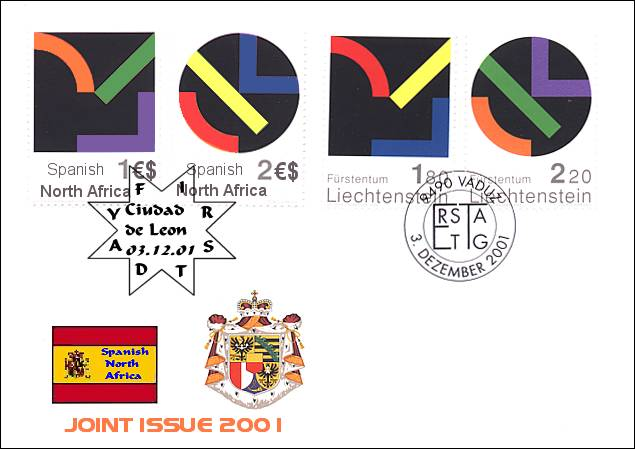

|
Created:
11/24/01. Revised: 01/07/06. |
|
|
SNA - LIECHTENSTEIN 2001 |
The Spanish North Africa and the F·rstentum Liechtenstein have many things in common, and this in spite of the big distance that separate them linguistically as well as geographically. One of the most important similarities being their common love for arts, the postal administrations of both countries decided to dedicate their first joint issue to the modern art, by taking advantage of the stamps series "Homage to Liechtenstein", introduced in 1993.
The two stamps of Liechtenstein are based on designs by the Swiss artist Gottfried Honegger, an outstanding representative of abstract art since the 1960s. His commitment to public art is always marked with a social tinge and geared toward radical freedom thinking. His artistic stance is marked by a very high degree of independence.
This is less the case of the artist who created the both stamps of the SNA issue - a still inexperienced Swiss follower of the renown master, who designed as well the FDC of the joint issue as the SNA cancel.

The works show a K (Kreis in German = circle) and a Q (Quadrat = square), another proof of a high degree of originality of their author. For this reason the stamps were issued in co-ordination with the Kunstmuseum (Art Museum of) Liechtenstein.
The Liechtenstein stamps were printed by the printing office H·lio Courvoisier S.A. in La Chaux-de-Fonds, Switzerland. They were, together with the newest Christmas stamps, the last ones delivered, as usually just in time, by this company (it closed in April 2001). The SNA stamps were printed by its successor, the printing house H·lio Courvoisier SNA in Ciudad de Leon.
Please notice also the new SNA currency, prepared for the compatibility with the Euro. Its official name is "The SNA EuroDollar", and it will be in use starting with the 1st of January 2002. The stamps will be used immediately after their issue, on 3rd of December 2001, the idea being to get accustomed the SNA citizens with their new currency. The Fennec Chips and the Yankee Dollars will co-exist with the EuroDollar at least till the big caravans will return to Ciudad de Leon.
Links:
SNA - Switzerland joint issue
Other "Homage to Liechtenstein" stamps
|
Created:
11/24/01. Revised: 01/07/06. |
|